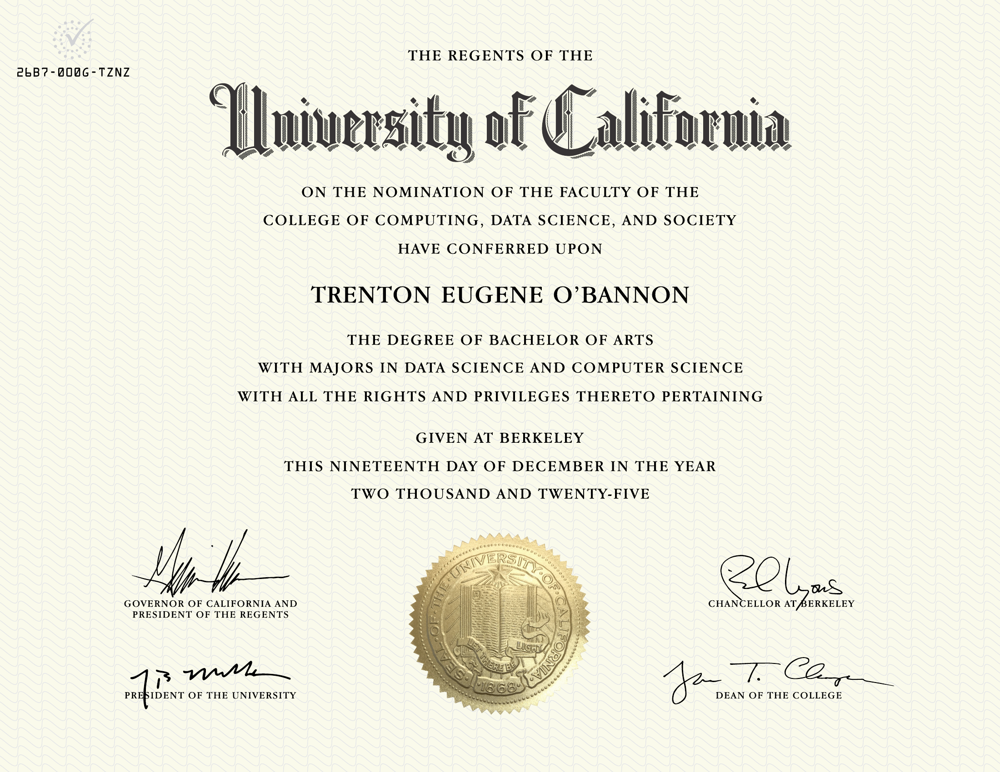
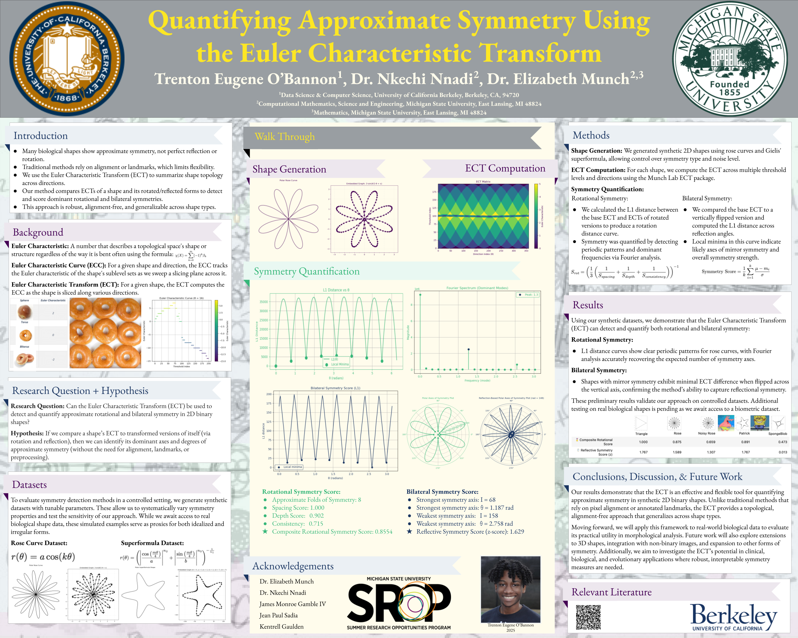
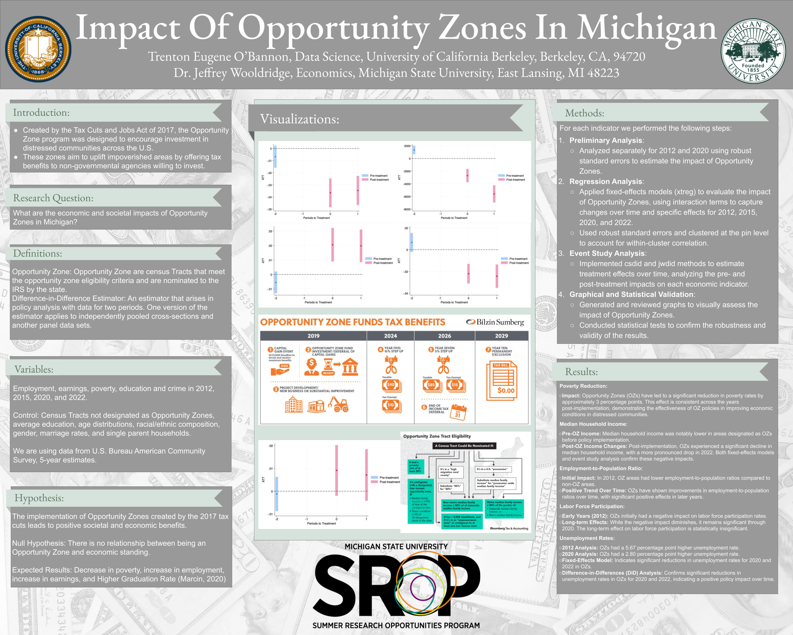
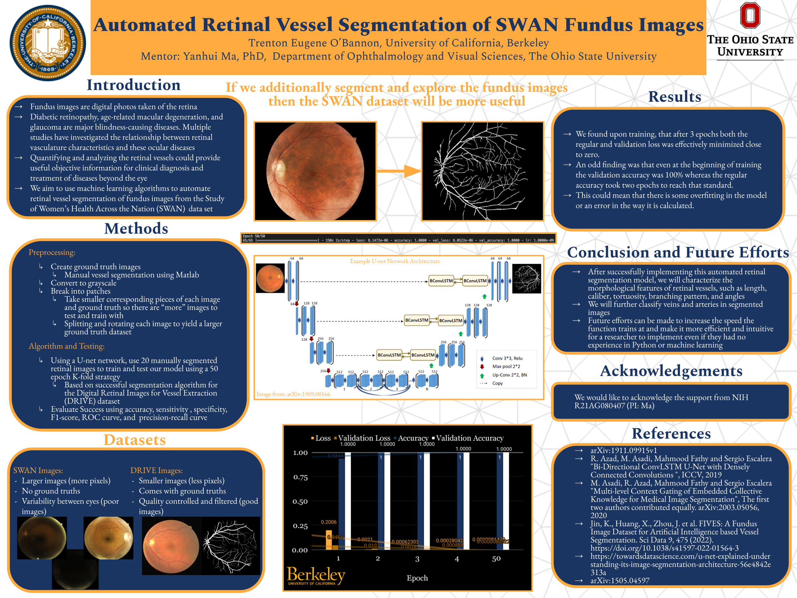
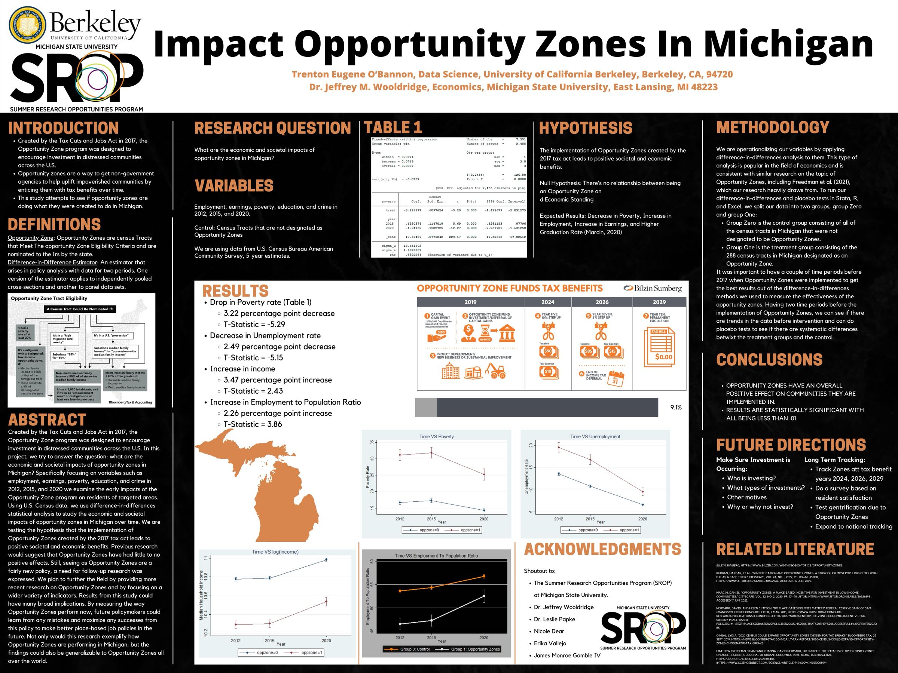

I just wrapped a B.A. at UC Berkeley in
Computer Science and Data Science (econ emphasis).
Right now: applying for two-year research-assistant
programs — empirical finance or computational
topology — as the bridge to a PhD, while moonlighting as a
senior backend engineer.
The thread that keeps me curious: finding hidden
structure in complex data — whether it's a tax-policy
effect across Michigan census tracts, a network of
capillaries in a retinal scan, or the symmetry of a 2D
shape encoded in its Euler Characteristic Transform.
I want the math and code that make the structure visible.
Cooking got me here first. As a kid I'd spend hours with a
recipe and a YouTube tutorial; what mattered was the
process, not the dish. Programming, then research,
gave me the same shape — only the medium changed.
Before Cal I grew up in Liberty, Missouri — 9 years as a
floor tech for the family carpet-cleaning business,
ProStart culinary competitions (3rd at nationals), and a
small obsession with making things that work. Off-the-clock:
still heavy in the kitchen, captain in the
RBLN, and
two years as a Berkeley RA.
02
Projects I'm proud of.
Class projects and side builds. Research lives on the wall ↓.
Senior capstone. Pitted Transformers, LSTMs, GRUs, and
vanilla RNNs against DFA learning tasks to study
generalization dynamics. Wrote the trainers, ablations,
and a 10K-sample eval framework from scratch.
Civic platform to track representatives and political
news. Implemented the Issue Classification feature
(17 categories), backed by 60+ RSpec tests at 100% pass.
60+ tests · 100% pass
17 topics classified
CS 169A · Dec 2025Private repo · interactive demo coming
Full-Stack · React + FastAPI
Dang Dishes — Cooking Assistant
Generates interactive, parallelized cooking timelines.
Web scraping, recipe parsing, history tracking — so you
can actually run three pots without losing your mind.
Logistic regression, random forest, gradient boosting,
clustering — full sweep on clinical + lifestyle features
for diabetes risk.
98.94% accuracy
0.9993 ROC-AUC
IEOR 142 · Dec 2024
Game · Java
World Generation
2D tile-based world exploration engine with randomized,
reproducible map generation — rooms, hallways, the works.
CS 61B · '22
Private repo
Game · Java
2048
The classic. Slide tiles, merge powers of two, try not
to lose to a 4×4 grid.
CS 61B · '22
Private repo
Game · Python (OOP)
Ants Vs. SomeBees
Plants-vs-Zombies, but ants. CS 61A's final boss —
inheritance, polymorphism, and tower-defense logic.
Framework + sprites by course staff; the
action methods are mine.
CS 61A · '21
Private repo
03
On the wall.
Diploma, four summers of research posters, and the receipts.

The receiptUC Berkeley · Bachelor of ArtsComputer Science & Data Science · Class of '25
2025

May–Jul 2025 · MSU CMSE · 🥇 1st place AGEP
Approximate Symmetry via the Euler Characteristic Transform
A topology-driven framework for detecting bilateral and
rotational symmetry in 2D shapes. Compared each shape's
ECT matrix to its rotated and reflected versions using
L1 distance to find the angles or axes of
highest similarity. Synthetic shape datasets (rose curves,
Gielis' superformula), polar plots, Fourier spectral
decomposition. Taught myself the foundations of
topological data analysis along the way — and the work
sparked the interest now driving my graduate apps.
With Dr. Elizabeth Munch and Dr. Nkechi Nnadi · SROP

May–Jul 2024 · MSU Economics · 🥈 2nd place AGEP · MEA oral
Impact of Opportunity Zones in Michigan — Round 2
Returned to the project with ACS data through '22,
added demographic controls, tested lagged effects, and
ran robustness checks across alternative DiD
specifications. The analysis showed meaningful drops in
poverty and unemployment alongside increases in income
and labor-force participation in designated tracts.
Presented to academics and policymakers — oral talk at
the Midwest Economics Association conference.
With Dr. Jeffrey Wooldridge · SROP

May 2023–Feb 2024 · OSU · NIH-funded study
Automated Retinal Vessel Segmentation (SWAN)
Built a U-Net convolutional neural network in TensorFlow
+ Keras to segment retinal blood vessels from a novel
fundus dataset. Hand-annotated training masks (no
existing labels), tuned data-augmentation pipelines,
MATLAB preprocessing. Reported every two weeks to
ophthalmology residents and the Dean of Ophthalmology.
The model's vessel segmentations — capillaries and
vascular branches critical for diagnosing diabetic
retinopathy — became the backbone of an NIH-funded
automated-screening study; drafted a first-author
manuscript with my advisor.
With Dr. Yanhui Ma · only undergrad / CS student on the team · SROP

May–Jul 2022 · MSU Economics · my first research summer
Impact of Opportunity Zones in Michigan — Round 1
The first summer. Built the original tract-level
longitudinal panel of Michigan communities (ACS '12–'22)
and independently implemented difference-in-differences
and fixed-effects estimators in R and STATA to evaluate
the 2017 TCJA Opportunity Zone designation. The
foundation the 2024 round expanded — fun to see how the
poster design grew up between the two.
With Dr. Jeffrey Wooldridge · SROP
MEA ConferenceKC · Mar '24
ProStart Nationals3rd · 2020
Consortium '23Oral · Columbus
04
The rest of the timeline.
2023 — 2025Berkeley Residential Life · Gold RA, then Blue RA — mentored RAs, ran 10+ programs, 70+ wellness checks.
2023 — 2025MLT Career Prep Fellow · 18-month fellowship, case studies, Deloitte/LinkedIn/Target workshops.
CS 61B Project 0 — game framework by course staff (P. N. Hilfinger). The Model · Board · Tile · Side implementation is Trenton's, compiled to a 7 KB jar that runs in your browser via CheerpJ (WebAssembly). GUI is a fresh JS canvas re-render — no staff-licensed library ships.
World Generation
Seed—Apples0/0Steps0Threats—
Mode
Algorithm
Difficulty
Seed
How to play
Move↑↓←→ / WASD / HJKL · swipe on touch · Esc to close
GoalYou're . Eat every to win. In Chase / Survive: don't get caught.
Booting Java in your browser…
CS 61B Project 3 — project framework + tile system by course staff. The world-generation algorithm (rooms, hallways, apple placement) is by Trenton with project partner Kamoni Fletcher. Compiled to a 20 KB jar via CheerpJ. The avatar, chaser shapes, and four pathfinding algorithms (Greedy / DFS / BFS / A*) are JS-side. Music: bulletsong.wav.
Ants Vs. SomeBees
🍃 Food0Time0
About this demo. CS 61A "Ants Vs. SomeBees" is a UC Berkeley course project. The game framework, class hierarchy, and original sprites in this demo are course staff materials, used here only as a runtime portfolio showcase. The implementation logic — most of ants.py: ant action methods, throwing/merging rules, container-ant logic, QueenAnt — is Trenton's. Source is shipped as marshalled bytecode rather than as raw .py to avoid leaking the full course solution. CS 61A ↗
Difficulty
Booting Python in your browser…
Click an ant card to select, then click a tunnel tile to deploy. Bees enter from the hive (right) and march toward the home base (left). All ants.py classes — Ant, Bee, GameState, QueenAnt, etc. — are running as actual Python via Pyodide (WebAssembly).